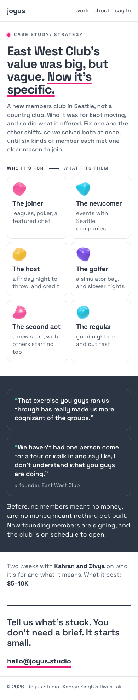

Study 94 · 11 November 2026
EWC, one stone that is six
One page, one scroll: the one person it is built for turns out to be six, and each takes a colour as they get a name and a reason.
The page open


On a phone


Beside 93 b


The six names and reasons are Kahran's, from 92 final. The other four lines are placeholders. Left out: the quotes, the cost, the paragraph.